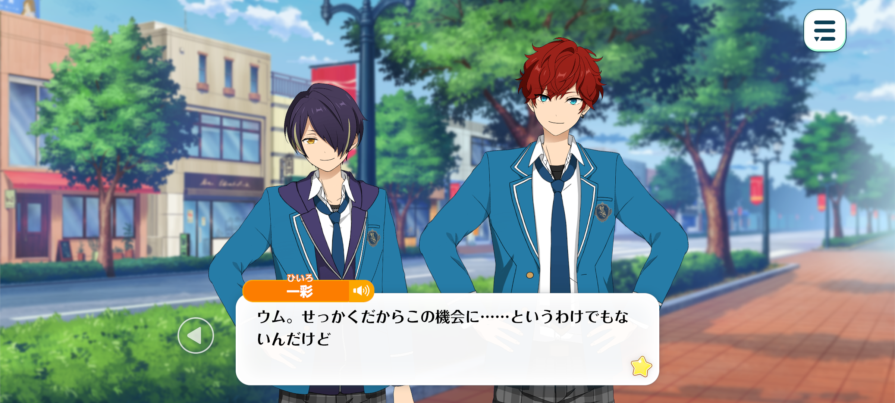
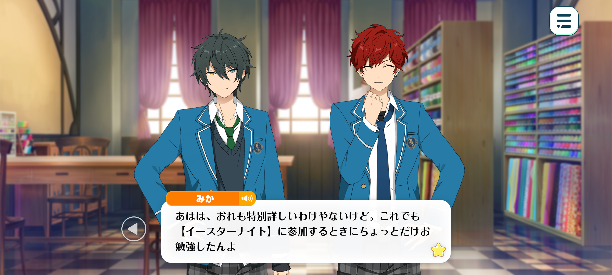
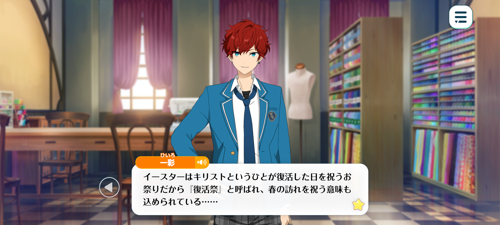
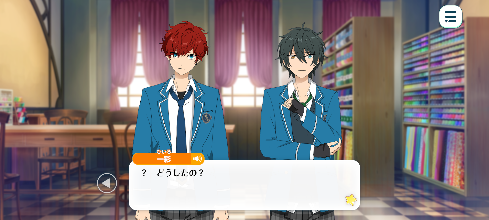

Easter To You
⌒Joyful 3⌒



Shinobu: Fufu. What a lovely coincidence, running into each other on our way to school! ♪
Hiiro: Umu. Since the opportunity has presented itself…
There's something I'd like to ask you, Shinobu-kun. Would that be all right?
Shinobu: Of course! What is it? I'll answer whatever you wish to ask! ♪
Hiiro: Then... what exactly does the “Easter” in “Easter Fes” mean?
…
Shinobu: U-Um...? Hiiro-kun, could it be that you've been listening to us talk about Easter all this time without actually knowing what it is?
Hiiro: I've read through the documents Anzu-san gave us, and I understand that it's some kind of festival associated with spring.
But I've never heard the word before, or even known that such a thing existed. I'd like to learn more so I'll know what I'm taking part in at Easter Fes.
Shinobu: Come to think of it, when I was talking with Anzu-dono in the cafeteria, she did mention that you'd come across some unfamiliar terms...
But now that you've asked me, I'm not sure I can explain it very well myself...?
I know what Easter refers to, but I'm not sure why it's called Easter in the first place...
And I don't know why things like rabbits and eggs are associated with it, either.
Hiiro: Do you think there might be some books about it in the library? Or would it be better to ask someone who knows more about the subject?
Shinobu: Someone who knows more about it...? Fumu. Kagehira-senpai took part in Easter Fes last time, so perhaps we should ask him?
I'll contact him now and see if he's free after school. Let's see... Click, click! ♪

Hiiro: —And that's why we'd like you to teach us about Easter, Kagehira-senpai.
Mika: Ahaha, I'm not really all that knowledgeable about it, either. I may've taken part in it before, but I didn't learn all that much.
But I'm glad you two asked me! It got me a little excited, so I went and borrowed a book about it~ ♪
Hiiro: Ah, so the library already had books about it. On behalf of both of us, thank you, Kagehira-senpai.
Mika: You're welcome~ ♪ Now that I think about it, will Hinata-kun be joining us?
Shinobu: Unfortunately, Hinata-kun is working until this afternoon... He asked me to “tell him everything we talked about, too!”
It seems today's lesson also came together rather suddenly.
Mika: I hope he can make it to our next lesson. Until then, we can learn as much as we can about Easter.
Hiiro: Umu. I've studied the customs and practices of the city in depth, so I'll be able to adjust my behaviour based on what I learn.
Shinobu: And hopefully, we can put what we learn to good use in our shuffle unit, too! ♪
Mika: Well then, let's start by takin' a look at this book...
It says here that Easter means “celebrating the return of life”. What d'ya suppose that means...?[1]
Hiiro: Easter is celebrated because it's the day Christ was resurrected.
It's sometimes called “Rebirth Festival” because it celebrates the arrival of spring...
The book explains that symbols such as these represent ideas like life, rebirth, and the prosperity of future generations.
It's quite a discovery, realising that the hopes and wishes behind these traditions are shared by people from different countries and cultures.

Shinobu: Now that I understand why rabbits and eggs are used as motifs, I feel much more at ease. ♪
Mika: I see~. Now I know that, I remember seein' loads of Easter eggs on display all over the stage at Easter Night.
Speakin' of Easter eggs, I once had a part-time job paintin' egg-shaped capsules and sellin' chocolate eggs at the event.
I used masking tape to decorate the capsules in all sorts of colours. That job was a lot of fun...
I'd love to do it again, but I don't think I'd be able to get a part-time job this time around...
But if there's some sort of paintin' activity at Easter Fes, I'd really like to give it another go.
Shinobu: If there's an opportunity to do that, I'll definitely take part, too!
A little while ago, I saw a picture of an Easter egg with a frog painted on it. It made me feel right at home... ♪
Hiiro: Looking back over the documents, it seems they've planned all sorts of events for the festival.
I'm sure we could arrange to have a painting activity, too. It would be even more fun if everyone could join in.
Mika: Yeah, yeah. Anyone can join in with Easter egg painting. I hope we get to do that...
Shinobu: By the way, Kagehira-senpai, what sort of designs did you paint last time?
Mika: Errr... I kinda just stuck skull-patterned tape all over mine...
Ahh!

Hiiro: ? Is something wrong?
Mika: I just checked the time! We gotta get back to the dorms and change, or we’ll be late for our lesson...!
Shinobu: Oh! You're right. We'd better hurry, then...!
Hiiro: I'm sorry. I said I wanted to learn about Easter, but I've ended up making both of you rush around.
Shinobu: N-No, not at all! It was a good opportunity for us to learn quite a bit about Easter! ♪
Mika: And now that we've talked about it, I'm feelin' even more excited for the festival, too! ♪
Shinobu: Last time, I was simply following Hibiki-dono's example, but this time I'm going to do my very best to keep up with him! I'll give it my all today!
Hiiro: I feel the same way about Easter Fes. I wonder what Wataru-senpai will teach us today?
- they’ve been using the katakana word イースター lit. easter. But they’re looking at the kanji for easter which is 復活祭 lit. rebirth festival